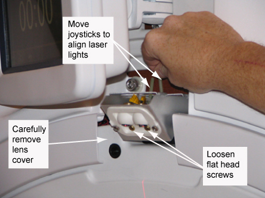
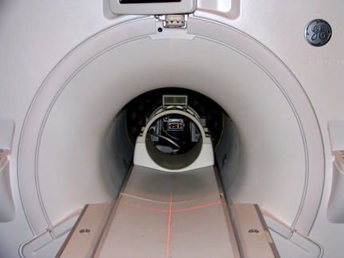
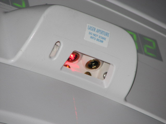
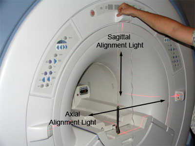
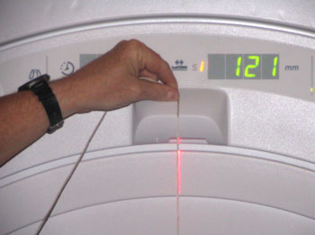
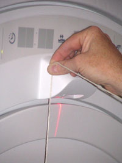
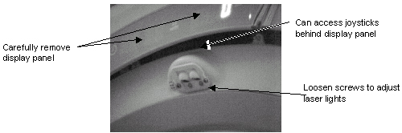
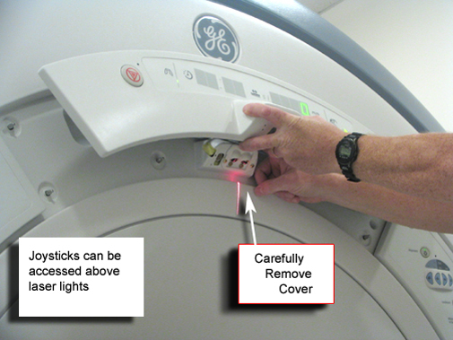

Operating Documentation
Direction 5500113, Rev# 3
Discovery MR750 3.0T Service Methods
Module Version 5.0, Version Date 8/19/08
Operating Documentation |
| Required Persons | Preliminary Reqs | Procedure | Finalization |
|---|---|---|---|
| 1 | Not Applicable | 30 mins | Not Applicable |
| Item | Qty | Effectivity | Part# | Manufacturer | |
|---|---|---|---|---|---|
| Non-Ferrous Allen Wrench Set | 1 | - | - | - | |
| Non-Ferrous Flat Blade Screwdriver | 1 | - | - | - | |
If an In Room Monitor is installed, follow the steps in this section. If not, refer to System without In Room Monitor.
Remove the laser light lens cover (top of magnet) by removing two (2) screws (see Illustration 1).
Illustration 1: Remove Laser Light Cover

Press the Alignment button on the control panel to turn on the laser light.
| ||||
| MagnetIC Field! | ||||
| USE OF FERRO-MAGNETIC DEVICE MAY CAUSE INJURY OR EQUIPMENT DAMAGE. | ||||
| When running a Plumb Line, a non-magnetic device or tool must be used. |
Run a plumb line, using a non-magnetic device, down from the Sagittal and Axial (top) laser lights. Verify that both the Sagittal and Axial alignment lights are aiming straight down and aligned with the string (see Illustration 2).
Illustration 2: Running a Plumb Line

If adjustments are needed, loosen the flat head screws and move the joysticks until the Axial and Sagittal laser lights are aligned properly. See Illustration 4.
| NOTE: | Ensure to tighten the head screws after making the required adjustments. |
Illustration 3: Adjusting Laser Lights

Illustration 4: Properly Aligned Laser Lights

Replace the laser light lens cover.
If an In Room Monitor is not installed, follow the steps in this section.
Remove the Lens cover for the laser lights.
Turn the laser lights on.
Illustration 5: Laser Light Configuration

| ||||
| MagnetIC Field! | ||||
| USE OF FERRO-MAGNETIC DEVICE MAY CAUSE INJURY OR EQUIPMENT DAMAGE. | ||||
| When running a Plumb Line, a non-magnetic device or tool must be used. |
Run a plumb line, using a non-magnetic device and string down from the Sagittal and Axial (Top) laser light. Verify that both the Sagittal and Axial Alignment Lights are aiming straight down (see Illustration 6, Illustration 7 and Illustration 8).
Illustration 6: Alignment Light Adjustment

When adjusting the Sagittal Alignment Light, the plumb line must run down the front of the Laser Light cover, as shown in the illustration below. The Sagittal Alignment light runs parallel to the magnet in the center of the bore.
Illustration 7: Sagittal Alignment Light

Verify that string is properly aligned with the beam. Then adjust Sagittal Alignment Light. This light runs parallel to the magnet bore.
When adjusting the Axial Alignment Light, the plumb line must run down the side of the Laser Light cover, as shown in the illustration below. The Axial light runs perpendicular to the magnet bore.
Illustration 8: Axial Alignment Light

Verify that string is properly aligned with the beam. Then adjust Axial Alignment Light. This light runs perpendicular to the magnet bore.
If adjustments are needed, remove the upper display by carefully prying the cover off. See Illustration 9 and Illustration 10.
Illustration 9: Axial & Sagital Light Adjustment

Illustration 10: Upper Laser

For dual laser light configuration, both joysticks will need adjustment. For the single laser light configuration, only adjust light on the left side.
No finalization steps.